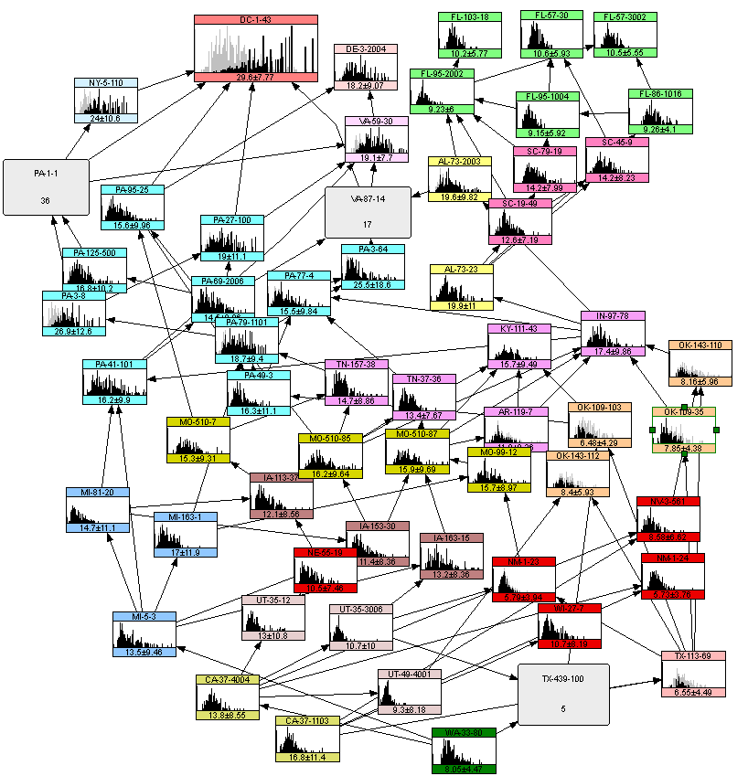

Welcome to the Personal Website of Roger M Cooke (Mathematics and Philosophy)
(last update September 19, 2026)


e-Cartoon 12
Traps of Uncertainty Reasoning; Uncertainty Aptitude v Weapons of Mass
Deception (28pp, 2025-9-20)
e-BOOK: Numbers: Gods, Certainty and Science (72pp, philosophy, 2026-9-10)
NEW: WHO estimates of the global, regional, and national
burden of 42 foodborne infectious and chemical hazards, 2000–21: an updated
data synthesis The Lancet (2026), with Structured Expert Judgment Findings
NEW: Wisdom or Madnesss of Crowds-Perils
of Point Forecsts, Decision Analysis 2026
NEW: Source attribution of foodborne pathogens in NL using SEJ, Int'l J Food Microbiology (2026, 3,17)
NEW: Identifiability and the Simplifying Assumption (Festschrift Claudia Czado 25-10-7)
NEW: Scoring
Rules & Performance: Futures & Foresight (2024/5/14)
NEW: Wisdom or Madness? wisdom of crowds and expert data (ESREL 2025; 8 pages)
NEW: Averaging Quantiles, Variance Shrinkage, Overconfidence: Futures and Foresight
with SI,
2022
NEW: Continuous Distns & SA for SEJ (Futures & Foresight 2025)
Recent: Social Cost of Carbon, Nature 2022
Recent: RFF: Social Cost of Carbon & Appendix 2021, background for NATURE 2022
Recent: Explaining
Variance of Pleistocene Climate Sensitivity,
2022
Recent: Vine Regression, effects of breastfeeding on IQ Risk Analysis 2021
Recent: Food&Water Disease transmission CDC SEJ Emerging Infectious Diseases 2021
Recent: Expert Forecasting Internat'l J of Forecasting with SI 2021
Recent: Vine Copula Regression for Observational Studies, Adv Stat Anal 2019
Recent: PNAS Ice Sheets SEJ and SI 2019
NEW: All videos for online course Structured Expert Judgment TU Delft
Copyright Delft University of Technology, and licensed under a Creative Commons Attribution 4.0 International License
Adding Uncertain
Numbers (11
mins)
WHO Intro to Structured
Expert Judgment (13 mins)
WHO elicitation role play (13 mins)
Cooke RFF Deciding under Uncertainty (10 mins)
Decision under Uncertainty, The Confidence Trap (13 mins)
SEJ Intro (9 mins)
SEJ Validation (25 mins)
SEJ for Ice Sheets 2019 (10 mins)
Combining disparate lines of
evidence Equilibrium Climate sensitivity (15 mins)
Uncertainty Aptitude (26 mins)
NEW: Macro converting XL file to EXCALIBUR dtt file
Other Resources:
Center for Structured Expert Judgment
Resources for the Future Homepage Roger M Cooke
UNINET non parametric continuous Bayesian Belief Nets
UNICORN (UNIGRAPH, UNISENS) uncertainty analysis with correlations (vintage, but works)
EXCALIBUR expert judgment calibration and information
ANDURYL python version of EXCALIBUR
VIDEOS of talks:
Using the Social Cost of Carbon to Value Climate Observing Systems Milan Jan 17, 2019
The Confidence Trap and Vine Regression Two talks, Wroclaw U. Sept 2018
The
Confidence Trap at ETH: voice over PPT
Dec. 11, 2018.
The
Confidence Trap: dysfunctional dialogues about climate change 45 min video Grande Conference. U.Montreal Oct 18,
2017.
Willy Aspinall:
Classical Model for Structured Expert Judgment, Centers
for Disease Control and Prevention, May
23, 2017. 1 hr intro to the Classical Model for Structured Expert Judgment for
participating experts.
Dependence
Elicitation for Ice Sheets. Non Gaussian
Multivariate Statistical Models and their Applications Banff 2013
Epistemic Unertainty for Ice Sheets IGS seminar Johathan Bamber Jul. 14, 2021, 1hr 10min
Blogs
2012: scientists sentenced to 6 years in prison for optimizing uncertainty of l'Aquila earthquake
2013: quantifying uncertainty on thin ice
2013: why the climate problem requires a new generation of uncertainty analysis
2014: deep and shallow uncertainty in messaging climate change
2014: flood insurance claims fat tail getting fatter
2015: dispelling epicycles regression
2017: respectability looming expert judgment
2017: whither co2 seeking science based quantification carbon cycle uncertainty
2019: The Iceman Cometh Ice sheet SEJ
2021: The Special Sauce: the science of forecasting
Wikipedia pages
Structured Expert Judgment, the Classical Model
Selected Recent Publications
Monetizing the Value of Measurements of Equilibrium Climate Sensitivity Using the Social Cost of Carbon, 2019 Environmental Modeling and Assessment.
Quantifying Uncertainty Antimicrobial Resistance: Comparing
Structured Expert Judgment and Statistical Forecasting Methods , 2019 PLoS One
Market based methods for monetizing uncertainty reduction 2019, Environment, Systems and Decisions
Probabilistic reasoning about measurements of equilibrium climate sensitivity: combining disparate lines of evidence: Climatic Change 2018
Expert Elicitation: Using the Classical Model to Validate Experts’
Judgments Review of Environmental Economics and
Policy, 2018. With SI
Knowing What We Face in an Uncertain Climate Scientia 2018 for general public
Cross Validation of Structured Expert Judgment Post 2006 Studies, with Supplementary Online Material Reliability Engineering 2017
Expert Judgment and Uncertainty Quantification for Climate Change Nature Climate Change Link 2016
Global Correlation and Uncertainty Accounting Dependence Modeling 2016
A commentary on "how to
interpret expert judgment assessments of twenty first century sea level rise" by H. de Vries
and R.van de Wal, Climatic Change 2016
Structured Expert Judgment: WHO Global Burden of Disease PLOS ONE Mar 1, 2016
Messaging climate change uncertainty with SI Nature Climate Change 2015. See also Deep and Shallow Uncertainty
Suburban watershed nitrogen retention Structured expert judgment assessment for the Chesapeake Bay, Elementa 2015 DOI 10.12952/journal.elementa.000063
Sampling, Conditionalizing, Counting, Merging & Searching Regular Vines Journal of Multivariate Analysis 2015
Deep and Shallow Uncertainty in Messaging Climate Change 2014 Resources for the Future, material appeared in Nature Climate Change Jan. 2015, Vol. 5 No 1, P. 8 10.
Integrated
Risk and Uncertainty Assessment of Climate Change Response Policies, Chap
2 WG3 IPCC 5th Assessment Report
Out of Sample Validation for Structured Expert Judgment 2014, Integrated Environmental Assessment and Management
Use of Structured Expert Judgment to Forecast Invasions by Bighead and Silver Carp in Lake Erie 2014 Conservation Biology Supplementary Online Material: calibration vbls A classical model B elicitation protocol: C rationales: D
Validating Structured Expert Judgment 2014 Experts and Consensus in Social Science, Springer
Model Uncertainty in Economic Impacts of Climate Change:Bernoulli Versus Lotka Volterra Dynamics 2012 Integrated Environmental Assessment and Management
Ship Borne Invasive Species Diminish Eco system Services (SEJ) 2012 Ecosystems
Value of information for climate observing systems 2012 Env. Sys and Decisions
Uncertainty Analysis Comes to Climate Change and Conversely 2012 Climatic Change
Fat Tailed Distributions; data, diagnostics and dependence 2011 Resources for the Future
Vines and Non parametric continuous BBNs, model learning 2011 Re thinking Risk
Vines Arise 2010 Vine Copula Handbook
Micro Correlations and Tail Dependence 2010 Vine Copula Handbook
Modeling and Validating Stakeholder Preferences with Probabilistic Inversion 2010
The Unholy Trinity: fat tails, tail dependence and micro correlations 2009 Resources for the Future
Vintage Publications
TU Delft Expert Judgment Data Base 2008 RESS
Social Network and Likelihood Weights 2008 RESS
The Anatomy of the Squizzel, the role of operational definitions in representing uncertainty 2004,RESS
Expert aggregation with dependence 2002 PSAM
Vines a new graphical model for dependent random variables 2002 Annals of Statistics
Probability density decomposition for conditionally dependent random variables modelled by Vines 2001 Annals of Mathematics and Artificial Intelligence
Procedures Guide for Structured Expert Judgment 2000 European Commission
Markov Tree and Vine Dependence 1997 Amer Stat Asoc
Uncertainty Modeling: examples and Issues; Safety Science 1997
Calibration and Information in Expert Resolution a Classical Approach1988 Automatica
An Elementary Proof of Gleason's Theorem, Proc Camb. Phil Soc (1985)
Discussion Papers
Market Based Methods for Monetizing Uncertainty Reduction RFFDP 2019 (also here)
Vine Regression Nov 25, 2015 (also here)
Vines in 4 Pages Prose short version of Vines Arise
Tail Dependence and Vines 2015 math primer
Essays, Religion, Philosophy, Foundations
Prophets versus Philosophers 2025 Amazon review of Assmann: The Invention of Religion
Passez
Outre The Trial of Jeanne d'Arc
Building on Foundations: SEJ interview
Vine Philosopher: Dependence Modeling interview
3=7? 2016 Amazon Review of Islamic Exceptionalism
Tepid, Timid, Tragic, 2016 Amazon Review A GUIDE TO SHARIAH LAW and ISLAMIST IDEOLOGY in WESTERN EUROPE, by Stephen Suleyman Schwartz, Dr Irfan Al Alawi
Even the Devil Loves his Friends and Hates his Enemies 2015 Amazon book review of Islam, Culture, and the Charlie Hebdo Affair
Helping God Express Himself 2015 Amazon review of Islam and the Future of Tolerance
Review of R. Fisk The Great War for Civilization 2014 Amazon book review
Jealous Gods...50 years hence 2011 invited (and rejected) contribution to a Mike Wallace book 50 Years Hence
A Number of Things 1995 Public address accepting chair in Dept Mathematics, TU Delft
****
Crib Sheet David Randall Atmosphere Clouds and Climate 2012
Crib Sheet David Archer Carbon Cycle 2010
Crib Sheet David Archer Long Thaw 2009
Crib Sheet Piketty Capital in 21st Century 2014
****
Structured Expert
Judgment Applications:
Lists of Publications 1994 -
2025
DATA from Structured
Expert Judgment
49 studies with Ave Quantiles with covariates, refs, XL and ascii format - best resource
45 cross-validation studies 2006-2017 45 XL files Eggstaff code results
DATA from UN CLAIMS COMMISSION re SEJ PM mortality from Iraqi oil fires
Curriculum Vitae Roger M. Cooke